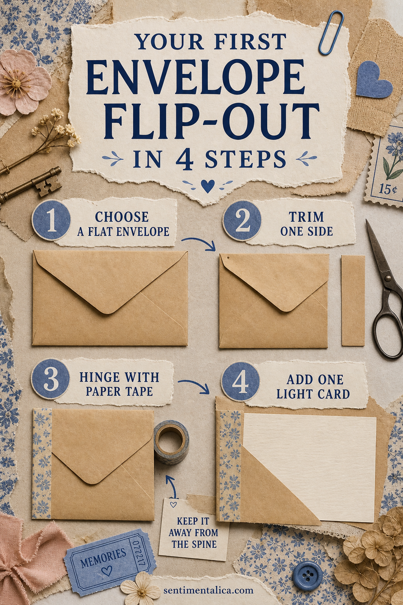
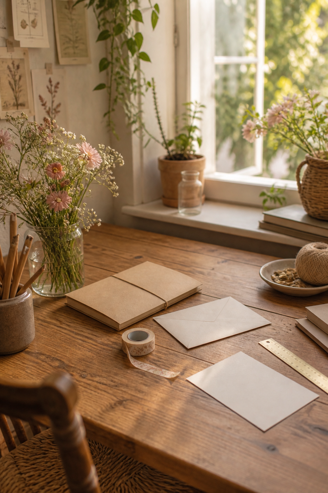

An envelope flip-out adds hidden writing space without requiring complicated measuring. The secret is to keep the envelope flat, the hinge flexible, and the contents light.

Choose a flat envelope
Use a small envelope that fits inside the page with room around every edge. Avoid padded, glossy, or very thick envelopes. An ordinary paper envelope is easier to hinge and creates less bulk when the journal closes.
Decide how it should open
Place the envelope on the page before trimming. It may open outward from the right edge, upward, or toward the center. Keep the moving edge away from the spine so it does not fight the binding.
Trim one side cleanly
If needed, remove a narrow strip from the side that will become the hinge edge. Use a ruler and craft knife on a safe mat, or scissors with a drawn guideline. Do not cut through the envelope pocket.

Create a flexible paper hinge
Cut paper tape or thin strong paper slightly shorter than the envelope. Attach half to the envelope and half to the journal page, leaving the tiniest gap along the fold. Open and close it before the adhesive dries completely.
Add one light card
Slide in a writing card, small photograph copy, or folded note. Test the flip-out with the contents inside. If it sags or pulls at the page, reduce the weight rather than strengthening everything with more glue.
Use the hidden back
The area beneath the envelope is ideal for a date, short list, or private sentence. Keep it mostly flat so the envelope can rest against the page. A small label can signal that the piece opens.
Fix common problems
If the envelope will not lie flat, widen the hinge gap slightly. If the tape lifts, replace it with a longer strip on a clean dry surface. If the page bends, move the project to a sturdier page or reinforce the back with thin paper.
Practice before using a special envelope
Make the first version from an ordinary mailing envelope. Once you understand the movement, try a saved correspondence envelope or one made from patterned paper. Use a copy when the original has sentimental value.
Choose a useful orientation
A landscape envelope suits a photograph or recipe card. A narrow upright envelope works well for tags and lists. Before attaching it, hold the journal as you normally read it and check that the contents will not fall out when the flip-out opens.
Keep the decoration functional
Add one tab, label, or narrow paper strip rather than covering the entire envelope. The flap and opening should remain obvious. If you want more pattern, decorate the removable card so the envelope itself stays flexible.
Plan the page behind it
Use a quiet base beneath the moving envelope. Dense layers can catch on the edges and make the mechanism feel clumsy. One written sentence or a pale stamped mark is enough to reward the reader when the envelope swings away.
A good flip-out feels like part of the page rather than a mechanism. Open it slowly, write something worth returning to, and let the construction remain simple.
Image note: Some visuals in this article were created with AI and curated by Sentimentalica.